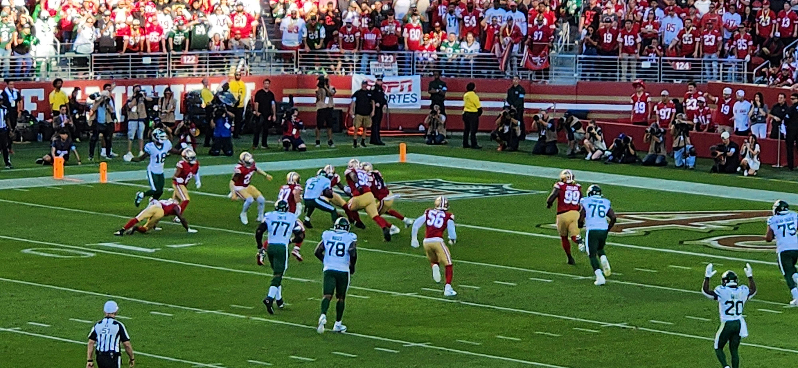

Featured Categories

NFL Season

MLB Highlights

Player Stats
Dive into the heart of American sports. This guide provides essential insights on teams, schedules, and understanding the game for new and veteran fans alike.

For millions of fans, the NFL and MLB represent more than just games; they are a tradition, a community, and a passion. Whether it's the strategic depth of a baseball inning or the explosive energy of a football touchdown, these sports offer endless entertainment. As a fan, keeping up with the latest trades, stats, and playoff pictures can be overwhelming, but it's part of the thrill.
We don't just look at the box scores; we look for the story. Our team of analysts breaks down the key plays, the coaching decisions, and the player performances that define the season.
We write for the fans. Our content is designed to be accessible, engaging, and respectful of your passion. We celebrate the spirit of competition and the community that sports create.
From the first pitch of Spring Training to the final whistle of the Super Bowl, we are here to cover it all. We provide updates on trades, injuries, and standings so you never miss a beat.
Understanding the dynamics of the NFL and MLB rests on knowing the season structure, the teams, and the road to the championships.
The National Football League (NFL) is a powerhouse of strategy and athleticism.
Major League Baseball (MLB) is a game of endurance and history.
Modern sports are driven by data. From batting averages to quarterback ratings, numbers tell the story.
A classic baseball statistic measuring the frequency that a batter gets a hit. While modern analytics favor OPS, AVG remains a staple for fans.
A complex formula in football used to evaluate the performance of a quarterback. It takes into account completions, attempts, yards, touchdowns, and interceptions.
The mean of earned runs given up by a pitcher per nine innings pitched. It is the gold standard for evaluating pitching performance.
Our community is the heart of USA Sports Hub, and we'd love to hear from you! Whether you have a question about a rule, a suggestion for a blog post, or just want to debate the MVP race, this is the place to do it.
We read every message and do our best to respond as quickly as possible. Let us know what's on your mind!